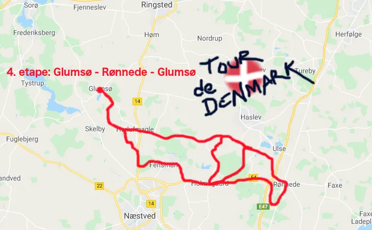

4. etape: Glumsø – Rønnede – Glumsø

Tema: Tour de Danmark
Efter to etaper i Jylland, var 4. etape henlagt til Sjælland. 73 km kuperet terræn med etapestart kl.19.00 så ryttermiddagen kl. 18.00 bestående af hakkebøffer med bløde løg kunne nå at konvertere til diamanter i benene.

Den planlagte 4.etape of Tour de France skulle have startet i Sisteron i Provence-Alpes-Côte d’Azur regionen i Frankrig med tv-billeder af vinmarkerne. Derfor passerede dagens danske etape som det første vinmarkerne ved Gelsted Nederland. Rosé, ja tak!
Er blæsende dag med 9 m/s gav godt med smæld i Dannebrog langs ruten og voldsomme byger resulterede i våde veje og store vandpytter. Det lykkedes dog at afvikle etapen uden mudderskred og andre forhindringer.
Efter passage af Holmegaards Glasværk og Gødstrup Sø var der for alvor dømt bakker. Smukt beliggende Villa Gallina markerede starten på opkørslen gennem skoven. Herefter Boserup og så den lange nedkørsel mod Borup og områdets bedst kendte stigning: P2-bakken.
På toppen af P2-bakken var der en Malacco ”intermediate” bjergspurt efterfulgt af 5 minutters løbsneutralisering til præmieoverrækkelsen.

Efter en all-out indsats kunne Squadra Moltenis Kristian Blume kæmpe sig først over stregen og modtage den eftertragtede æske med lakridspiper.
”Den 42-19 gearing jeg brugte i dag er tung, men hurtig på bakkerne” udtaler Kristian.
Herfra gik turen forbi Gisselfeld Gods og sluttelig Broksø Gods inden etapemålet kort før kl 21. Her viste Kristian Blume for alvor, at hakkebøffer kan konverteres til diamanter i benene. Blume vandt etapen ved at køre solo i mål foran en felt, der var løbet tør for brun sovs…
Forza Molteni
4. Etape:
1. Kristian Blume, Squadra Molteni
Klassement:
1. Kristian Blume, Squadra Molteni
2. Svend Seegert, Squadra Molteni
3. Niels Bjørnsteen, Squadra Molteni
Hold:
1. Squadra Molteni